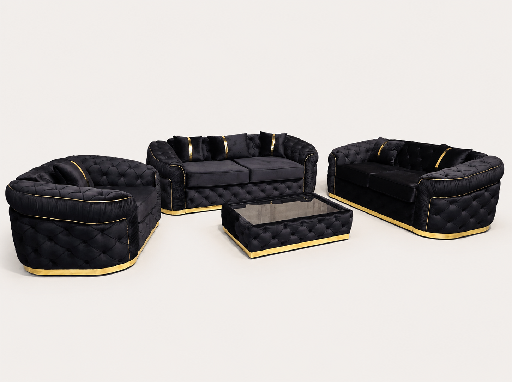

An icon of British design — deep button tufting and rolled arms. Buy by the piece, or save as a set.

| Piece | Price |
|---|---|
| 1 Seater | £350 |
| 2 Seater | £500 |
| 3 Seater | £600 |
| Coffee Table | £200 |
| Set | Price |
|---|---|
| 3+2 Seater Set | £1,000 |
| Full Set 3+2+1 | £1,200 |
Add the coffee table to any set for £200 · includes free UK delivery.
Enquire about this sofaNo checkout needed — we confirm fabric, colour and size on WhatsApp.
Every Chesterfield Sofa is made to order. You choose the fabric, the colour and the exact dimensions, and the buttoning is set out to suit the length rather than stretched to fit it. A Chesterfield built 20cm shorter is re-proportioned, not simply cut down.
Frames are solid hardwood and the buttoning is worked by hand. Every sofa is covered by your rights under the Consumer Rights Act 2015, so if one turns out to be faulty we repair, replace or refund it and collect at our cost. A Chesterfield sits more upright than a modern lounging sofa, and the deep-buttoned back is padded rather than pulled tight over the frame, so it gives where you lean on it. We deliver free across mainland UK, usually within two to three days of your order being confirmed, and cash on delivery is available so you can pay when it arrives — see delivery for the detail, including the access measurements worth checking first. Because each sofa is cut to your specification, please read our returns and cancellations policy before you order.
Yes. Send us your room dimensions on WhatsApp and we'll adjust the length, depth and configuration to fit. There's no extra charge for standard resizing.
Yes. The buttoning on a Chesterfield is the part that cannot be rushed — each button is pulled through and secured by hand, which is what gives the back its depth and keeps the pleats even. It is also the first thing to look at when judging quality, as our Chesterfield buying guide explains.
That is what we offer. Our Chesterfields are upholstered in fabric — velvet and chenille both suit the style particularly well, because the pile catches the light across the buttoning. Message us for the colour card.
Properly made, yes. The buttoning is worked into padding rather than pulled tight over a hard frame, so the back gives where you lean on it. A Chesterfield does sit more upright than a modern lounging sofa, which some people prefer and others do not — worth knowing before you choose one.
Yes. Cash on delivery is available on most orders, or you can pay a deposit and settle the balance when the sofa arrives. Full details are on our delivery page.
Send us your room measurements on WhatsApp and we'll come back with fabric options, sizing help and a firm price — usually within minutes.
Message us on WhatsApp